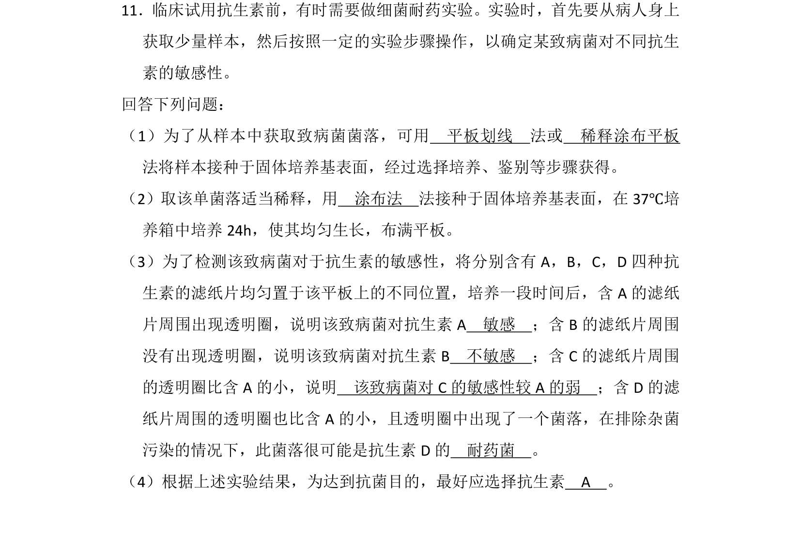
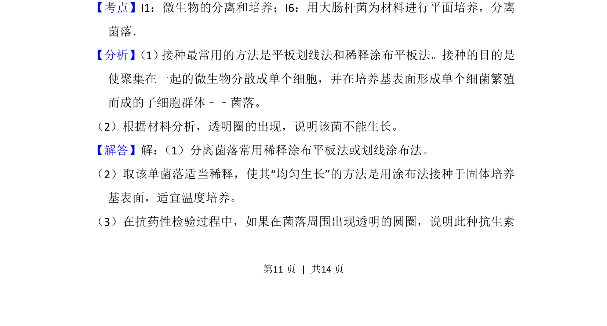
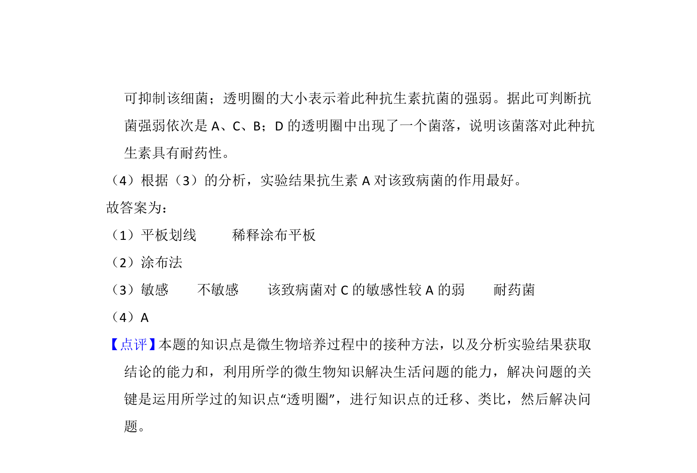

考点：微生物的分离和培养 接种方法 抗生素敏感性实验

该题考查微生物分离培养、接种方法及抗生素敏感性实验的结果分析。


📄 原 PDF 第 11 页：
素材/真题/吉林/2008-2024·（吉林）生物高考真题/2013年高考生物试卷（新课标Ⅱ）（解析卷）.pdf
11．临床试用抗生素前，有时需要做细菌耐药实验。实验时，首先要从病人身上 获取少量样本，然后按照一定的实验步骤操作，以确定某致病菌对不同抗生 素的敏感性。 回答下列问题： （1）为了从样本中获取致病菌菌落，可用 平板划线 法或 稀释涂布平板 法将样本接种于固体培养基表面，经过选择培养、鉴别等步骤获得。 （2）取该单菌落适当稀释，用 涂布法 法接种于固体培养基表面，在37℃培 养箱中培养24h，使其均匀生长，布满平板。 （3）为了检测该致病菌对于抗生素的敏感性，将分别含有A，B，C，D四种抗 生素的滤纸片均匀置于该平板上的不同位置，培养一段时间后，含A的滤纸 片周围出现透明圈，说明该致病菌对抗生素A 敏感 ；含B的滤纸片周围 没有出现透明圈，说明该致病菌对抗生素B 不敏感 ；含C的滤纸片周围 的透明圈比含A的小，说明 该致病菌对C的敏感性较A的弱 ；含D的滤 纸片周围的透明圈也比含A的小，且透明圈中出现了一个菌落，在排除杂菌 污染的情况下，此菌落很可能是抗生素D的 耐药菌 。 （4）根据上述实验结果，为达到抗菌目的，最好应选择抗生素 A 。
【考点】I1：微生物的分离和培养；I6：用大肠杆菌为材料进行平面培养，分离 菌落．菁优网版权所有 【分析】 （1） 接种最常用的方法是平板划线法和稀释涂布平板法。接种的目的是 使聚集在一起的微生物分散成单个细胞，并在培养基表面形成单个细菌繁殖 而成的子细胞群体﹣﹣菌落。 （2）根据材料分析，透明圈的出现，说明该菌不能生长。 【解答】解： （1）分离菌落常用稀释涂布平板法或划线涂布法。 （2）取该单菌落适当稀释，使其“均匀生长”的方法是用涂布法接种于固体培养 基表面，适宜温度培养。 （3）在抗药性检验过程中，如果在菌落周围出现透明的圆圈，说明此种抗生素